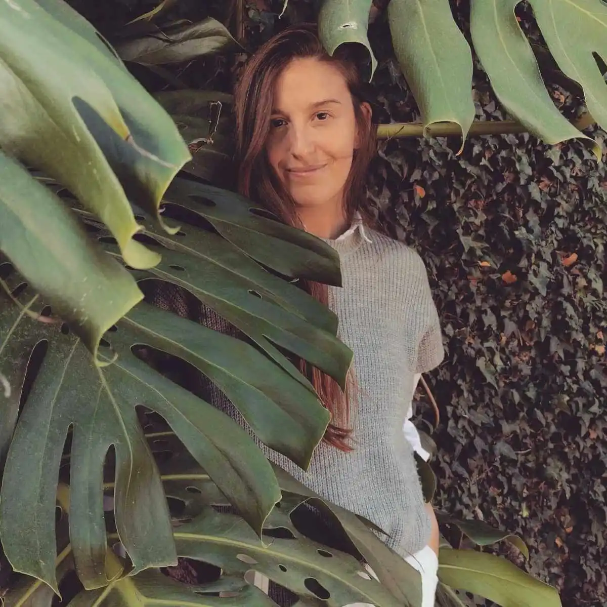

Camila Malumbres
Nacida bajo un mes que dijo llamarse marzo.
Me gusta tanto la tierra que me tocó un signo de agua.
De risa fuerte y lágrima fácil. Lloro de la música para adentro y de la letra para afuera.
De lugar favorito el campo que vio crecer a mi abuelo.
De religión, los libros y la poesía.
De ideología, cualquiera que me recuerde mis "quiero".
De hobby, mirar el cielo.
De lema, el que me recuerda lo importante: que mientras respire todavía hay tiempo.